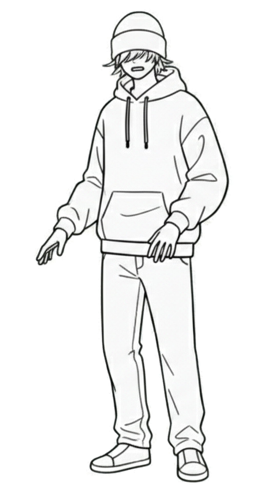
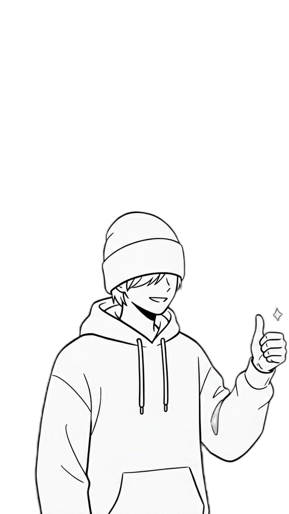
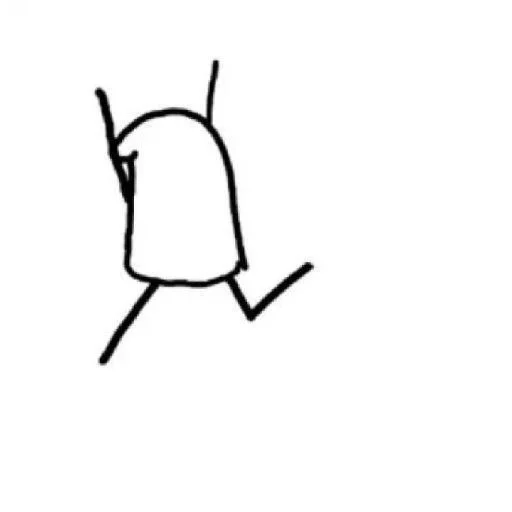
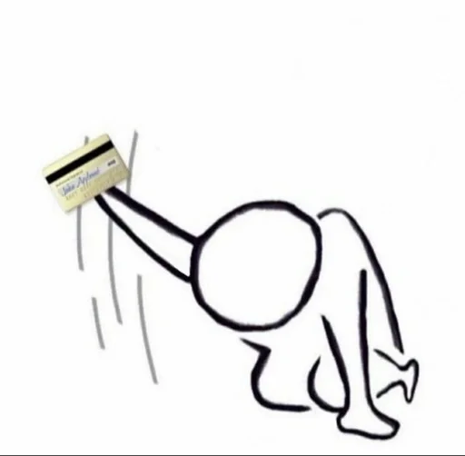

{ API }
</>
وش
يعني
API؟
الكلمة ممكن تبان معقدة وتقنية شوي

أبسط مما تتوقع!
تخيل إنك

أنت (الطاولة)
المطبخ (الأكل)
؟ ؟
؟ ؟


ممنوع تدخل المطبخ!
صح؟

النادل (الوسيط)
الطلب
الأكل

خرائط
UBER
H
الـ API هو نفسه بالضبط
خرائط
سلة · Salla
بوابة المتاجر
Pay
بيانات حساسة
التطبيقات بشكل عام
نرجع للنادل!

بدون تفاصيل سرية!


سلة
n
a
Pay
سلة التسوق
لابتوب احترافي
فاتورة #402
400 SAR
وسيلة الدفع:
الدفع عبر تابي
4 دفعات شهرية
tabby
تم الدفع بنجاح ✓
معالجة الطلب
100 ريال
01
100 ريال
02
100 ريال
03
100 ريال
04

وهذا هو الـ API
H
Pay
بدون ما يشوف أحد تفاصيل الثاني

تابعنا للمزيد